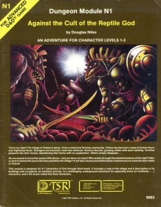

"Terror by night! The village of Orlane is dying. Once a small and thriving community, Orlane has become a maze of locked doors and frightened faces. Strangers are shunned, trade has withered. Rumors flourish, growing wilder with each retelling. Terrified peasants flee their homes, abandoning their farms with no explanation. Others simply disappear..."
Terror by night! The village of Orlane Is dying. Once a small and thriving community. Orlane has become a maze of locked doors and frightened faces. Strangers are shunned, trade has withered. Rumors flourish, growing wilder with each retelling. Terrified peasants flee their homes, abandoning their farms with no explanation. Others simply disappear...
No one seems to know the cause of the decay —why are there no clues? Who skulks through the twisted shadows of the night? Who or what Is behind the doom that has overtaken the village? It will take a brave and skillful band of adventurers to solve the dark riddle of Orlane!
This module Is designed for 3-6 characters of third through fifth levels. The adventure ranges from an overland journey to a challenging underground adventure for especially brave (or foolhardy...) characters. A list of pre-rolled characters can be found in "The Heroes" section.
At first, this adventure plays as more of a mystery game with plenty of roleplaying options. But be warned! Danger is around every corner! You never know when you might slip into a fateful encounter! Because this originnally was a module published in 1982 for Advanced Dungeons & Dragons, it does have more of an old-fanioshed type of play. This includes traps, tougher encounters, and zany puzzles. So it is encouraged that you check around those corners and check for traps!
Sage's advice: "A little paranoia is good to have as an adventurer. But remember, stepping into dangerous scenarios is at the heart of who an adventurer is! If you don't want to risk the occasional pit trap, become a farmer instead!"
Between the bandit-infested Dim Forest and the slime-coated pools of the Rushmoor, lies a fertile land. It was upon this land that Orlane itself was founded nearly a generation ago. Soon after the arrival of the first farmers, a temple to the goddess of agriculture, Merikka, was erected, and thus, the village of Orlane was born. The land here proved to be very rich, often producing crops half again as large as thosegrown in more mundane soil. Orlane quickly grew into a thriving community of 300 people.
the population of Orlane has undergone a steady decline. Many farmers have packed their possessions and, for unknown reasons, migrated to other, less fertile areas. Some homes have simply been found abandoned, with food on the table or crops unharvested in the field. No explanation has ever been offered for these strange disappearances. Sometimes the families have returned in a week or two, and other times they have never been heard from again. The friendly character of Orlane has vanished as those who remain have become suspicious of the strange occurrences. Families have drawn in upon themselves, rarely conversing with their neighbors. Now, strangers in Orlane are more often met with questions and challenges than friendly invitations. Something sinister is at work in Orlane!
"There they stood, the four of them looking down at me, all clad in gear and probably thinking themselves ready for what lie ahead. I did my best to warn them of the dangers but they wouldn't listen to an old woodcutter. They might have bought maps from the town over and heard all sorts of stories about the treasure that lie hidden in them mountains. But what they weren't prepared for was the bandits that jumped them as they crossed the bridge. As it turns out, they did have some nice weapons. I got silvered dagger off one of their corpses!"
It is required that you have two characters for this adventure.
When you go to the campaign link here, you can choose what character you want to assign to yourself!
Maidel, the Elven Magic-Fighter.
Ruskin, the Halfling Theif-Fighter.
Create your character using D&D Beyond by clicking here.
Valid Races: Dragonborn, Dwarf, Elf, Gnome, Half-Elf, Halfling, Half-Orc, Human, Tiefling
These rules are found in chapter 1 of the Player's Handbook. The places that are different or special to my setting are in bold font
There are three ways of determining your stats. The first is to generate your character's six ability scors randomly.
Roll four 6-sided dice and record the total of the highest three dice. Do this five more times, so that you have six numbers. If you finish rolling but don't have above a 15, roll again.
As you roll, put each total down in order of Strength, Dexterity, Constitution, Intelligence, Wisdom, and Charisma (or you can just place them anywhere you like if you are not cool). I recommend using this homebrew rule if you would like to let the dice decide what type of character you want to play!.
If you want to save time or don't like the idea of randomly determining ability scores, you can use the following scores instead: 15, 14, 13, 12, 10, 8.
If you want to be weird you can use the variant: customizing ability scores found in chapter 1 of the Player's Handbook."